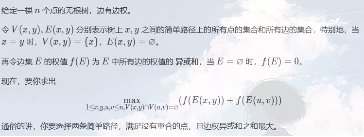
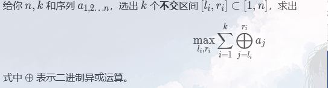

….
线段树 and 树状数组
作为全机房线段树最菜的，主要介绍一下经典题型（大家搞忘了还可以回去复习）：
主席树
值域线段树，区间 k 大值上运用广泛。
具体拓展，在此引用省队巨佬和机房巨佬的话
- 省队：能干他能干的事。
- 机房巨佬：它能干主席树能做的所有题。
事实证明大家都会，就鸽了QWQ
李超线段树
$\log n$查询单点处，所有覆盖此点的线段在此的最大值或最小值。
ex 李超上树（树链剖分）山东 OI 2016 游戏
扫描线
树链剖分
树套树
关于平衡树的空间是个谜，最好开2~3倍$n\log n$。
区间最大字段和
区间取min/max
区间最大字段和+取min/max
优化dp的部分留给张巨了。
至于树状数组，大家好像都会（本人也不知道还有什么拓展）。
拖一下时间，看道例题：
n<=1e5,1<=a[i]<=1e9
其实这类经典题目还挺多，没时间做了（想要的私聊）。
Trie
优秀的空间，实质是将相同前缀的被匹配串的前缀合并。
T1
关于字符串的都太老套了，大家先看一道题（好像都没做过）：
1
2
3
4
5
| 给定一棵 n 个点的带权树，结点下标从 1 开始到 n。寻找树中找两个结点，求最长的异或路径。
第一行一个整数 n，表示点数。
接下来 n-1 行，给出 u,v,w ，分别表示树上的 u 点和 v 点有连边，边的权值是 w。
1 ≤ n ≤ 100000，0≤w<2^31
|
详见Solution
关于$Trie$套$hash$先鸽了，反正$hash$也是我讲。
T2

没有Solution
讲实在的，国赛都考不了这么毒瘤，如果有兴趣想继续冲一冲luogu月赛AK的可以去看一下。
这里只介绍链的情况，也就是sub3
梅开三度（Dyd最喜欢的）

n <= 3000
笛卡尔树
一种非常特殊的搜索树，每个节点都有两个信息 $(x_i,y_i)$，如果只考虑x ，这就是一颗搜索树，只考虑y，它就是一个小根堆。
它有什么好处呢？
- $O(n)$建树（
题目时间复杂度允许$n \log n$的情况下，除了好写，就没得儿用（限制还多），用Treap硬刚得了）
对于忘了性质的同学，这里将笛卡尔树的性质放一下：
1
2
3
4
5
| 一个结点的左子树中的所有结点的第一个权值都小于其第一个权值（空子树也满足）；
一个结点的右子树中的所有结点的第一个权值都大于其第一个权值（空子树也满足）；
一个结点的两棵子树中的所有结点的第二个权值都大于其第二个权值（空子树也满足）。
|
丑陋不堪的代码：
1
2
3
4
5
6
7
8
| for(int i = 1, pos;i <= n;i ++)
{
pos = top;
while(pos && a[stk[pos]] > a[i]) pos --;
if(pos) rs[stk[pos]] = i;
if(pos < top) ls[i] = stk[pos + 1];
stk[top = pos + 1] = i;
}
|
至于考点，请原谅本人学识短浅，实在没找到。
平衡树
AVL不讲，因为不会（本人只会fhq-treap和Splay），想听LCT的也别想了。
关于这个，oi-wiki上都没有独立的文章，鉴于大家至少会一种平衡树，直接讲应用。
斜率优化
之前因学术不精，闹了些乌龙。
使用对象：加入dp方程的x 坐标不是单增时。
使用方法：按照 x 为第一关键字插入平衡树即可。
希望张巨多讲点。
例题
[NOI2007] 货币兑换
[NOI2019] 回家路线
[NOI2016] 国王饮水记
[NOI2014] 购票
按难度排序（考的还蛮多的）。
fhq-treap
安利一波个人博客
后缀平衡树
1
2
3
4
5
6
7
8
9
| 给你一个字符串 init，要求你支持三个操作：
在当前字符串的后面插入若干个字符。
在当前字符串的后面删除若干个字符。
询问字符串 s 在当前字符串中出现了几次（作为连续子串）？
你必须在线支持这些操作。
|
这是神马？？
1
2
3
| "后缀平衡树"这个名字正确性存疑，由于 clj 给的"重量平衡树"定义有歧义。
字符串我也不会，所以也没去查证。 - by lxl
|
并不在提高组考纲内，放在这儿仅供冲刺更毒瘤比赛的童鞋（请自主学习 luogu P6164）。
基环树
先来道例题：
P4381 [IOI2008] Island
总结一下，基环树主要考断环，以下三种方法比较经典。
Hash
该来的，还是得来的。
事先声明，本人字符串学的并不好，有错误请不要大声喧哗，但还是要当面指出。
先说说如何卡hash。
前置知识
卡大质数hash (1000000009) :
考虑生日攻击，随机一个$10^5$大小的字符串，询问长度为L的本质不同子串的数目，用大质数hash和后缀数组(也可以用自然溢出hash对拍，输出不同子串的终止位置，拿fc命令对比一下，找出hash值相等的不同子串，正确性如生日悖论，有超过50%的几率成功。
卡自然溢出hash:
自然溢出hash在数据随机的情况下正确性极高，因为它的值域很大, 很难生日攻击
考虑特殊构造：
对于底数为偶数:
构造$aaaa\cdots aaaa$和 $baaa\cdots aaaa$两个长度相等且长度大于64的串。
底数的六十四次方以上溢出就会为零, b和a也会被判为相等。
对于底数为奇数的
不会，不神仙构造根本卡不了。
综上所述，双hash永远的神（根本卡不了）。
废话讲完了，进入正题。
例题：
T1
1
2
3
4
5
6
7
| 第一行一个正整数n(n≤500 000)，表示S的长度。
第二行n个小写英文字母，表示字符串S。
第三行一个正整数q(q≤2 000 000)，表示询问次数。
下面q行每行两个正整数a,b(1≤a≤b≤n),表示询问字符串S[a…b]的最短循环节长度。
|
T2:
记不到题号了，简单描述一下。
1
2
3
4
| n 行，每行一个多元组。
要求选出尽可能远的两个多元组，使得两个多元组满足：
a1-b1=a2-b2=......=am-bm
n*m<=1e7
|
Trie+hash
Trie最常规的用法是压缩储存空间和优化查询速率，既然它可以体现路径，自然就可以被hash。
P3879 [TJOI2010] 阅读理解
Solution
个人比较挫，讲的不好请见谅
主席树
形式类似于逆序对数，考虑分治。
对于区间：[l,r]，找到其中的最大值k，对于问题[l,k-1]，[k+1,r]递归处理，对于本层，枚举[l,k]，主席树查询[k,r]中值$\le \frac{val[k]}{a[i]}$的数的个数。
有点卡常，这么写有点小问题，如果k=l+1，复杂度将为$O(n^2 \log n)$，加一个启发式合并即可做到稳定的$O(n \log^2 n)$。
1
2
3
4
5
6
7
8
9
10
11
12
13
14
15
16
17
18
19
20
21
22
23
24
25
26
27
28
29
30
31
32
33
34
35
36
37
38
39
40
41
42
43
44
45
46
47
48
49
50
51
52
53
54
55
56
57
58
59
60
61
62
63
64
65
66
67
68
69
70
71
72
73
74
75
76
77
78
79
80
81
82
83
84
85
86
87
88
89
90
91
92
93
94
95
96
97
98
99
100
101
102
103
| #include<bits/stdc++.h>
#define LL long long
#define PII pair<int, int>
using namespace std;
template <class T>
inline void read(T &res)
{
res = 0; bool flag = 0;
char c = getchar();
while('0' > c || c > '9') { if(c == '-') flag = 1; c = getchar();}
while('0' <= c && c <= '9') res = (res << 3) + (res << 1) + (c ^ 48), c = getchar();
if(flag) res = -res;
}
template <class T, class ...Arg>
inline void read(T &res, Arg &...com){ read(res), read(com...);}
template <class T>
void write(T res)
{
if(res > 9) write(res / 10);
putchar(res % 10 + '0');
}
const int N = 1e5 + 5;
int n, m;
int a[N], b[N], root[N];
namespace pol{
int lg[N], f[N][22];
inline int check(int x, int y)
{
return a[x] >= a[y] ? x : y;
}
inline void Init()
{
lg[1] = 0;
lg[2] = 1;
for(int i = 1;i <= n;i ++) f[i][0] = i;
for(int i = 3;i <= n;i ++) lg[i] = lg[i >> 1] + 1;
for(int j = 1;j < 22;j ++)
for(int i = 1;i + (1 << j) - 1 <= n;i++)
f[i][j] = check(f[i][j - 1], f[i + (1 << (j - 1))][j - 1]);
}
inline int query(int l, int r)
{
return check(f[l][lg[r - l + 1]], f[r - (1 << lg[r - l + 1]) + 1][lg[r - l + 1]]);
}
}
namespace seg{
struct Node{
int val, s[2], sz;
}tr[N * 30];
int idx;
inline int insert(int q, int l, int r, int val)
{
int rt = ++ idx;
tr[rt] = tr[q];
tr[rt].sz ++;
if(l == r) return tr[rt].val = val, rt;
int mid = l + r >> 1;
if(val <= mid) tr[rt].s[0] = insert(tr[q].s[0], l, mid, val);
else tr[rt].s[1] = insert(tr[q].s[1], mid + 1, r, val);
return rt;
}
inline int query(int q, int p, int l, int r, int st, int ed)
{
if(st > r || ed < l) return 0;
if(st <= l && r <= ed) return tr[q].sz - tr[p].sz;
int mid = l + r >> 1, res = 0;
if(st <= mid) res += query(tr[q].s[0], tr[p].s[0], l, mid, st, ed);
if(ed > mid) res += query(tr[q].s[1], tr[p].s[1], mid + 1, r, st, ed);
return res;
}
}
long long ans;
void calc(int l, int r)
{
if(r - l + 1 < 1) return ;
if(r - l + 1 == 1) return ans += (b[a[l]] == 1), void();
int mid = pol:: query(l, r), st = l, ed = r;
calc(l, mid - 1), calc(mid + 1, r);
if(mid - l <= r - mid)
{
for(int i = l, k;i <= mid;i ++)
k = lower_bound(b + 1, b + m + 1, b[a[mid]] / b[a[i]] + 1) - b - 1,
ans += seg:: query(root[r], root[mid - 1], 1, m, 1, k);
}
else {
for(int i = mid, k;i <= r;i ++)
k = lower_bound(b + 1, b + m + 1, b[a[mid]] / b[a[i]] + 1) - b - 1,
ans += seg:: query(root[mid], root[l - 1], 1, m, 1, k);
}
}
int main()
{
read(n);
for(int i = 1;i <= n;i ++) read(a[i]), b[i] = a[i];
sort(b + 1, b + n + 1);
m = unique(b + 1, b + n + 1) - b - 1;
for(int i = 1;i <= n;i ++) a[i] = lower_bound(b + 1, b + m + 1, a[i]) - b;
for(int i = 1;i <= n;i ++) root[i] = seg:: insert(root[i - 1], 1, m, a[i]);
pol:: Init();
calc(1, n);
write(ans);
return 0;
}
|
Trie
二进制
首先$n^3$肯定不难，想办法进一步优化，发现异或的值在边上，我们将每一条边权向下压成点权，此时我们可以发现：
$$
val(x,y)=val(x,root) \ xor \ val(root, y)
$$
正确性显然（找到公共祖先展开即可），预处理点到根节点的异或值，$n^2$枚举即可。
但是发现出题人神似lxl，$n^2$依旧爆蛋，根据二进制题常见套路，按位贪心，于是我们枚举$x$之后就要快速找到和$x$取反差距最小（不同位之和最小）的值，此时我们将所有的$val(x,root)$建成一颗$Trie$树，从高位向低位贪心，尽可能取$!(x >>i \ and \ 1)$即可。
复杂度：$O(30n)$。
1
2
3
4
5
6
7
8
9
10
11
12
13
14
15
16
17
18
19
20
21
22
23
24
25
26
27
28
29
30
31
32
33
34
35
36
37
38
39
40
41
42
43
44
45
46
47
48
49
50
51
52
53
54
55
56
57
58
59
60
61
62
63
64
65
66
67
68
| #include<bits/stdc++.h>
#define LL long long
#define PII pair<int, int>
using namespace std;
template <class T>
inline void read(T &res)
{
res = 0; bool flag = 0;
char c = getchar();
while('0' > c || c > '9') { if(c == '-') flag = 1; c = getchar();}
while('0' <= c && c <= '9') res = (res << 3) + (res << 1) + (c ^ 48), c = getchar();
if(flag) res = -res;
}
template <class T, class ...Arg>
inline void read(T &res, Arg &...com){ read(res), read(com...);}
template <class T>
void write(T res)
{
if(res > 9) write(res / 10);
putchar(res % 10 + '0');
}
const int N = 1e5 + 5;
int n, m;
int idx;
int e[N << 1], ne[N << 1], h[N], w[N << 1];
int a[N], s[N * 30][2], cnt, ans;
inline void add(int x, int y, int z)
{
idx ++;
e[idx] = y, ne[idx] = h[x], h[x] = idx, w[idx] = z;
}
void dfs(int x, int y)
{
for(int i = h[x], j; ~i;i = ne[i])
{
j = e[i];
if(j == y) continue;
a[j] = a[x] ^ w[i];
dfs(j, x);
}
}
inline void insert(int x)
{
int root = 0;
for(int i = 30; ~i;i --)
if(!s[root][x >> i & 1]) s[root][x >> i & 1] = ++ cnt, root = cnt;
else root = s[root][x >> i & 1];
}
inline int query(int x)
{
int root = 0, res = 0;
for(int i = 30; ~i;i --)
if(s[root][!(x >> i & 1)]) res += 1 << i, root = s[root][!(x >> i & 1)];
else if(s[root][x >> i & 1]) root = s[root][x >> i & 1];
else break;
return res;
}
int main()
{
memset(h, -1, sizeof(h));
read(n);
for(int i = 1, o, u, p;i < n;i ++) read(o, u, p), add(o, u, p), add(u, o, p);
dfs(1, -1);
for(int i = 1;i <= n;i ++) insert(a[i]);
for(int i = 1;i <= n;i ++) ans = max(ans, query(a[i]));
write(ans);
return 0;
}
|
回滚莫队+分治
严格意义上来讲，这题的链和上题没有区别。
首先将前缀异或和，后缀异或和给拉出来，建两颗Trie树，一颗查1~i，一颗查i+1~n即可。
反正都过不了，不打了。
令人不惊讶的是标题所指的表算被lxl踩爆了，在此放一个单$log$做法（这玩也儿就可能考了）。
1
2
| 将两点间路径的亦或和转化为两点赋值的亦或后，不要急着求出每个子树的最大路径，而是先把全局最大路径先拉出来，这样再分类讨论就可以让每个节点的访问次数达到O(1)，于是就只剩下01trie的log
这主要是因为，想知道树上某个联通块的最大路径，只需把联通块中所有点的赋值全部加入01trie，再对联通块中每个点的赋值分别在这个01trie中查询亦或最大，并取max即可
|
考到就摆烂
dp
$n ^ 3$区间dp做法挺显然的，不丢人现眼了。
正解是伞兵随机化（就因为数据随机？），考虑原方程（这不是一般人的区间dp）：
$$
f[i][j]=max_{k=1}^{i-1}(f[k][j-1]+sum[k+1][i])
$$
先拉一遍前缀异或和，sum[i][k]指从i~k中挑两个数，使其及其之间异或和最大。
当sum数组不变时，柿子变得极其简单，打标发现，sum，几乎不变，压缩sum，就做完了。
期望复杂度：$n^2 \log w+nk \log n$
证明：
由于数据随机生成，当我们插入一个数时，设此时已经插入 m 个数，这时候一共有 $\dfrac {(m+1)m} 2$ 个异或和，这个数可以贡献 $m$ 个异或和。即有 $\dfrac 2 {m+1}$ 的几率成为 $\max$，这个数贡献了 $\dfrac 2 {m+1}$ 的期望。
所以 $f_{i,k}$ 中的数的个数的期望为 $\sum_{i=1}^{n}\dfrac 2 {i}≈2\times\log n$，所以期望时间复杂度为 $O(n^2\log w+nk\log n)$。
QWQ
基环树
- 将森林中互相连通的部分缩起来。
- 每个连通块内一定有且仅有一个环，分环和链两类讨论（考虑经过根和不经过根，看起来貌似有些麻烦，可以破环成链，这样环上的距离就好处理了），求出联通块的直径。
- 将直径加起来。
代码很久以前写的了，码风比较丑，就不展示了。
hash
T1
首先明白一点，500000以内因数最多的数的因数有288个，我个人一定会专门拿一个点来全部询问这个区间，要解决这个问题也很简单，拿个map对记录询问答案即可，但事实是出题人良心没有这种数据，本人这个开map去重的二货给送进去了。
解法也十分简单：
预处理hash值，暴力从大到小枚举区间长度的因数，$O(1)$判断即可。
个人感觉这样写很妙：
1
| least[primes[j] * i] = min(least[primes[j] * i], primes[j]);
|
预处理质数时存下每个数的最大因数，后期就比较省力。